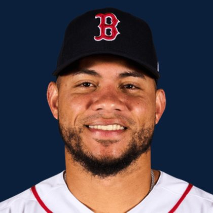

BASE KEEP
The Keep · The Diamond · The Farm
Player File · 1B STL

Willson Contreras
#40 · 1B · Boston Red Sox · age 34 · B/T RR · 6' 0" / 240 lbs · MLB debut 2016 · Puerto Cabello, Venezuela
Keep avg110.55
# Boards20
BK Value2,681
Spread91-322
Hitting
| Year | G | AB | R | H | 2B | HR | RBI | SB | BB | SO | AVG | OBP | SLG | OPS |
|---|---|---|---|---|---|---|---|---|---|---|---|---|---|---|
| 2026 | 116 | 401 | 64 | 114 | 21 | 25 | 75 | 3 | 53 | 122 | .284 | .393 | .534 | .927 |
| 2025 | 135 | 490 | 70 | 126 | 31 | 20 | 80 | 5 | 44 | 142 | .257 | .344 | .447 | .791 |
The Keep#106BK 2,681
The Lineup#79BK 3,504
The Diamond#103BK 2,760
The 2026 line
Keep #106 · avg 110.55 · 20 boards · .284 / 25 HR / 3 SB / .927 OPS
Baseball Savant
Starcast · spray · pitch
Percentile ranks (Starcast) plus the official Savant spray chart for bats and pitch chart for arms. Open the full Baseball Savant page.
Batter · 2026
xwOBA
96
xBA
68
xSLG
92
xISO
93
xOBP
95
Barrels
88
Barrel %
91
EV
62
Max EV
97
Hard Hit %
70
K %
22
BB %
75
Whiff %
14
Chase %
23
Speed
49
Arm
51
OAA
60
Bat Speed
96
Squared Up
5
Swing Len
91
Hits spray chart
Minus
- Age 34 - dynasty tax.
- Board spread 91-322 (231 ranks).
Board graph
Spread 91-322 · 20 sources
Every Board
Spread 91-322 · 20 sources
| Source | Rank |
|---|---|
| RotoWire | 91 |
| FanGraphs The Board | 91 |
| ESPN | 92 |
| NFBC ADP | 92 |
| Mastersball | 92 |
| ATC ROS | 92 |
| CBS Sports | 94 |
| Ottoneu | 95 |
| Baseball Prospectus | 99 |
| The Dynasty Dugout | 99 |
| Fantasy Baseballers | 99 |
| Baseball America | 99 |
| Four-Seam Fantasy | 101 |
| The Athletic | 104 |
| Dynasty League Baseball | 105 |
| RotoGraphs Model | 108 |
| Pitcher List | 108 |
| TDG Points | 111 |
| Razzball | 117 |
| FantasyPros Dynasty ECR | 322 |
BK News
All players · The Keep · The Farm · The Diamond · BK News · The Lineup · Pitchers · Calculator